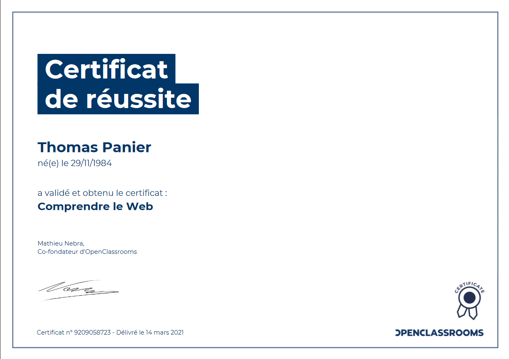

Je suis un futur développeur et suis actuellement en formation développeur web et web mobile à l'AFPA.
J'occupe mon temps libre à valider quelques certifications sur OpenClassRooms ou attestation sur SecNumAcadémie de l'ANSSI.
Cette liste non exhaustive continuera de grandir avec le temps (commencée le 15 février 2021).
